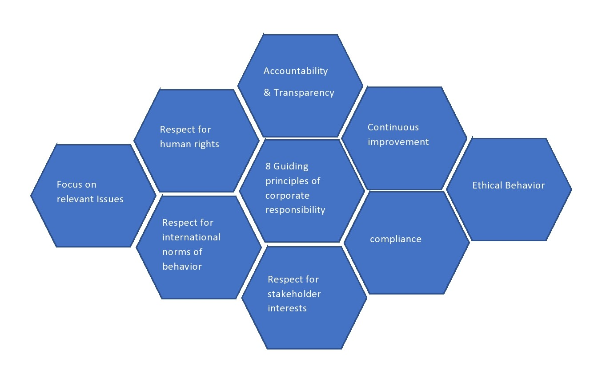

8 GUIDING PRINCIPLES
BRINGING VALUE TO PEOPLE, CUSTOMERS, COMMUNITIES AND THE ENVIRONMENT
Informed by the international standard (ISO 26000) for social responsibility, these eight guiding principles intend to further develop the company’s corporate responsibility efforts by establishing a strong foundation for the organization.

1.Accountability and Transparency:-
Just as important as communication and operating with speed, is the need to be accountable and transparent. It is important to assess and monitor, and be responsible for the impact those decisions and actions have on the environment, society, the economy and stakeholders. Aligned with this is an openness to disclose operational details, policies and progress in a transparent, comprehensive and timely way. The company encourages active dialogue with stakeholders, realizing a collective voice provides invaluable feedback that is key component of this corporate responsibility journey.
2.Continuous Improvement
The company recognizes that social, economic and environmental responsibility is by no means absolute, with no beginning or end. It is a process of continuous reflection with an active drive to always improve and avoid complacency. Through the deployment of leading practices in the journey toward operational excellence, Hanon Systems can continue to advance its corporate responsibility agenda and bring a positive impact to stakeholders.
3.Ethical Behavior
Hanon Systems fosters an environment built on honesty, equality and respect. It is recognized that every effort and every success in business must come from ethical decisions and ethical activities. This is made possible by educating employees on the company’s values, ethics policies and code of conduct to ensure ethical behavior is embedded throughout the organization. The company also aims to use open and transparent dialogue with stakeholders to continuously improve this approach in the hope of inspiring others, external to the company, to do the same.
4.Compliancer
While compliance is generally associated with financial reporting, Hanon Systems recognizes how a business is managed is a fundamental aspect of our corporate responsibility. Hanon Systems complies with all applicable laws and regulations internationally and locally. Whether it is complying with environmental regulations, international health and safety standards or financial reporting laws, adhering to all aspects related to compliance contribute to the sustainability of the company and its stakeholders.
5.Respect for Stakeholder Interests
As a company with global reach, Hanon Systems impacts a multitude of stakeholders around the world. Through open dialogue, active listening and transparency, the company aims to build and maintain relationships that are rooted in trust, and address stakeholder concerns and interests. Engagement of this level and honest consideration of the stakeholder’s voice can provide the necessary platform to strengthen relationships and bolster a company’s corporate responsibility position.
6.Respect for International Norms of Behavior
Hanon Systems respects international norms of behavior. In situations where regional or local laws fail to satisfy, or are indeed in conflict with international norms, Hanon Systems will review its relationships and initiatives in that geographic area. The company also is proactive in seeking ways to influence stakeholders where such conflicts arise.
7.Focus on Relevant Issues
As a concept, corporate responsibility has a large scope, which is why it is critical to prioritize and first focus on the relevant issues. It is important to understand what is material and what is not. Through stakeholder dialogue and self-assessments, Hanon Systems supports the principle that an organization should focus its efforts on areas relevant to the company and where an impact can be made.
8.Respect for Human Rights
Hanon Systems supports and promotes the protection of internationally recognized human rights. Measures are in place to ensure these rights are not breached and assessed annually. The company also recognizes the universality of human rights and that, irrespective of location, culture or situation, they are globally applicable.